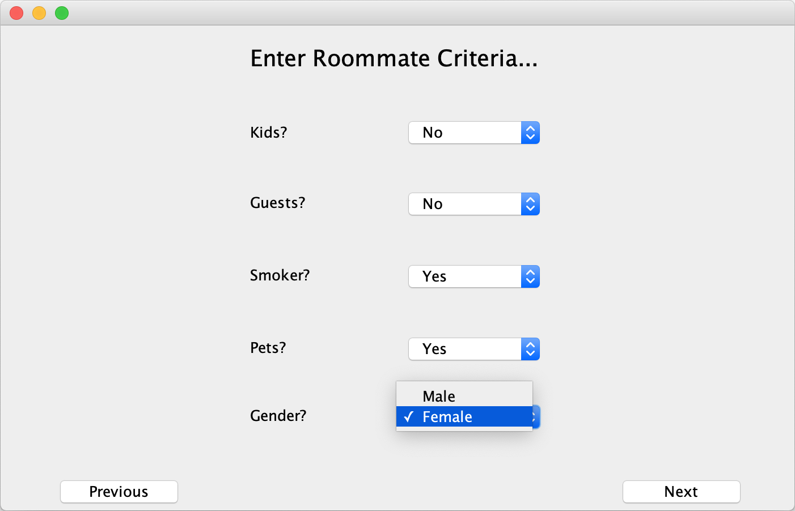
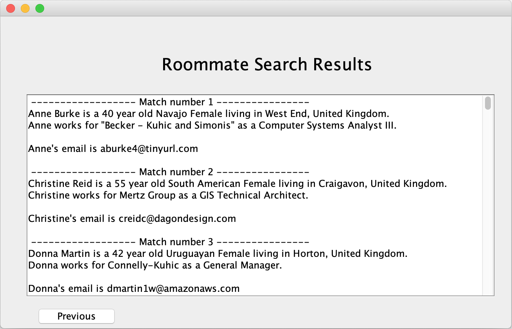
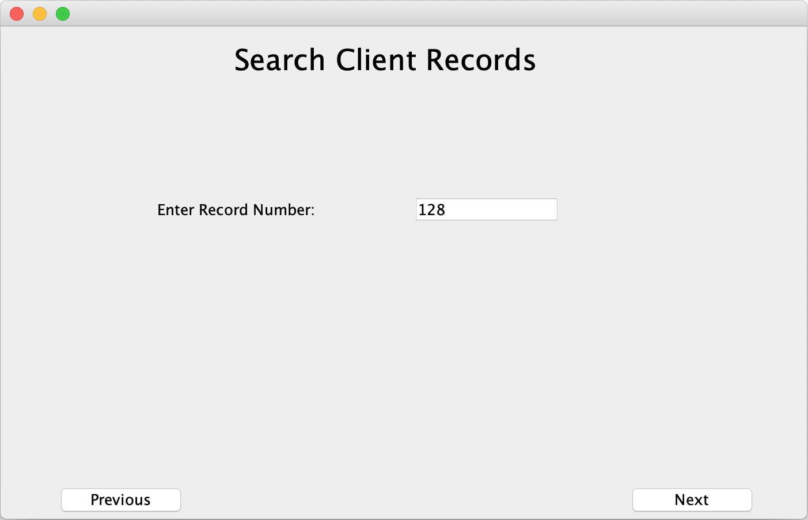
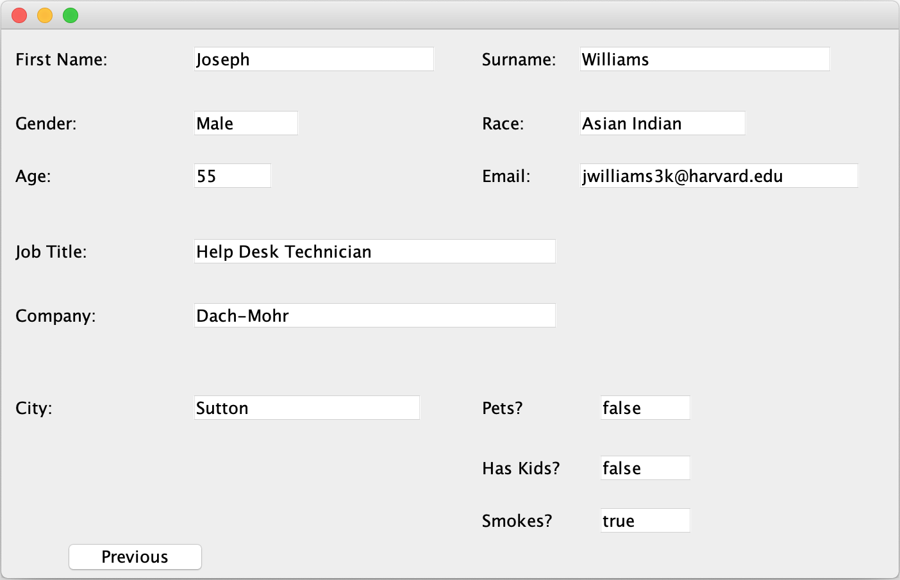

Overview
Dater is a cross-platform desktop application built in Java with a Swing GUI. The premise is simple: finding compatible roommates is harder than it should be. Dater lets users specify what matters to them — smoker or non-smoker, pets, gender preference, schedule, cleanliness — and surfaces a ranked list of matches from the pool.
It's less about romance and more about practicality. Flat-sharing works better when the people involved actually have compatible lifestyles. The app was designed to make that matching process explicit and friction-free.
How It Works
- User selects preferences across several lifestyle categories
- Algorithm ranks candidates by compatibility score
- Results list is generated and sorted by best match
- Users can contact matches directly from the results interface
Why Java + Swing
Java Swing was chosen specifically for cross-platform compatibility — the goal was a single codebase that runs identically on Windows and macOS without modification. Swing gave full control over the UI, which was important for keeping the layout clean and functional.